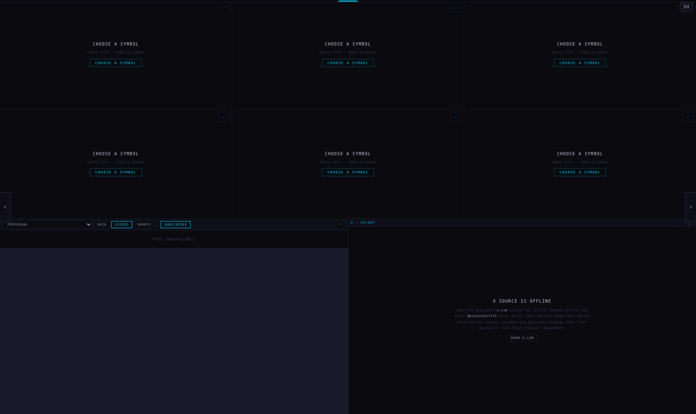
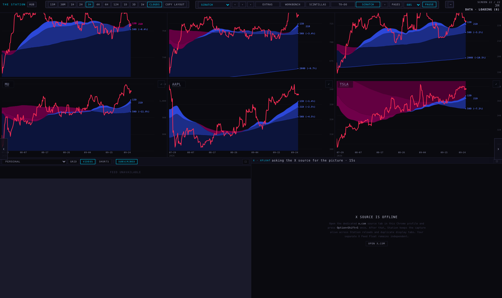
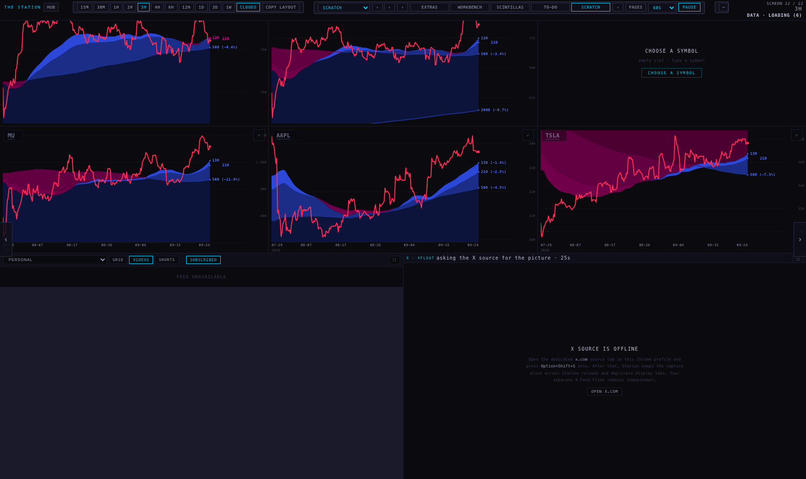
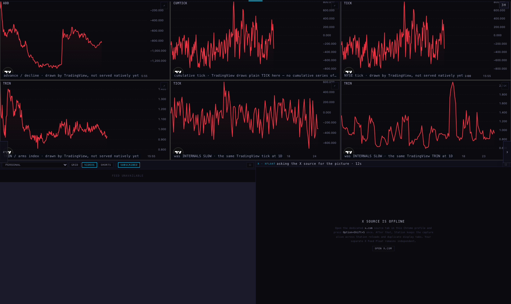
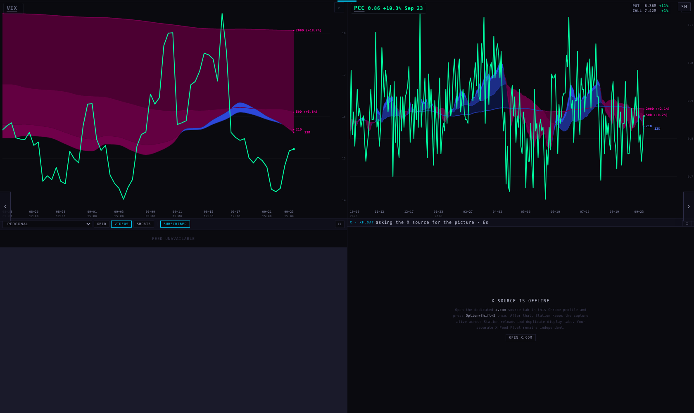
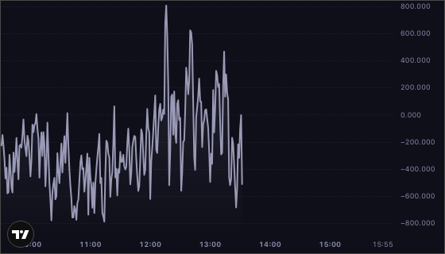
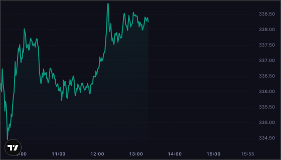
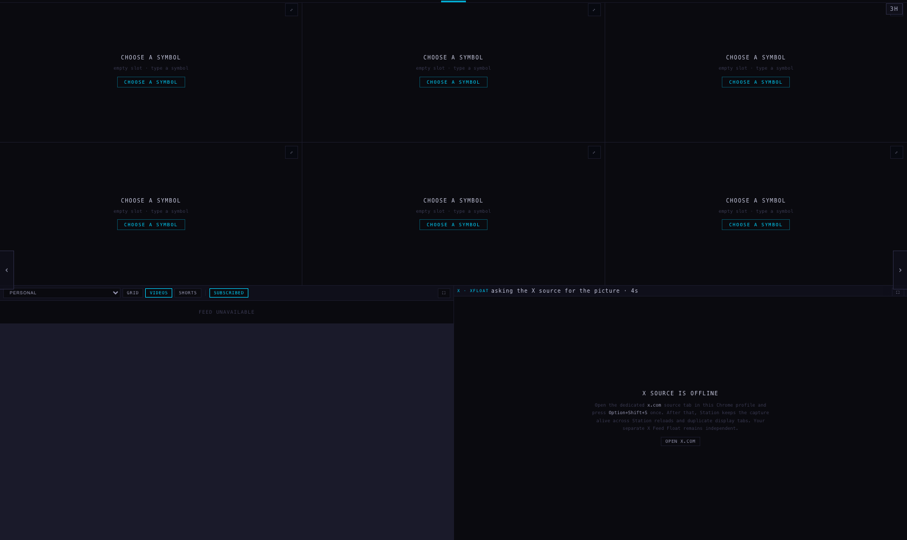
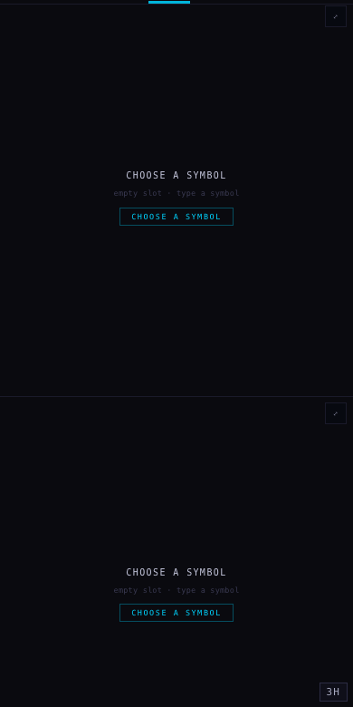

Three things you asked for. An empty six-chart screen at the very end of the deck that you type tickers into. A to-do screen before it holding the four internals that are still somebody else's picture, each one saying why it is there. And the timeframe you are on, written where you can always see it.
Nothing is deployed. This is a branch. The branch, the commit and the command to push it are at the bottom. Every picture below was taken headless — no browser window opened on your screen at any point.
"I need kind of like a one empty six chart screen layout kind of as the ending screen so that I can search tickers in and that it'll work and that they will change… think of it like if I was creating the layouts in new pages, and then in that new page we will rearrange, and I'll tell you, okay, this one we save."
SCRATCH is the last page in the deck. The right arrow from SCINTILLAS reaches TO-DO, then SCRATCH, then it wraps back to INDEX NOW. It opens with six empty slots and nothing in them — no SPY, no SNDK, nothing chosen for you.



A copy layout button sits next to the timeframe bar and only appears on SCRATCH. It puts the wall on your clipboard as one line:
{"scene":"scratch","tickers":["SPY","QQQ","","MU","AAPL","TSLA"],"range":"3h"}
That is the line taken from the run above, with the cleared third slot kept as an empty string — the shape of the wall is part of what you are saving. Paste it back and it becomes a named page in the deck. The button says "copied", or "copy failed" if the browser refuses the clipboard, and the line is printed on screen either way so it can always be read off and typed back. Nothing is sent anywhere.
"I still see ADD gray, tick gray, cumulative tick gray, trend gray. And if they're gonna be gray, I would send them to an empty layout at the end, as kind of like to do reminders, and kind of save VIX and PCC on their own, which are more useful."

| Pane | What it says |
|---|---|
| ADD | advance / decline · drawn by TradingView, not served natively yet |
| CUMTICK | cumulative tick · TradingView draws plain TICK here — no cumulative series of our own |
| TICK | NYSE tick · drawn by TradingView, not served natively yet |
| TRIN | TRIN / arms index · drawn by TradingView, not served natively yet |
| TICK · 1D | was INTERNALS SLOW · the same TradingView tick at 1D |
| TRIN · 1D | was INTERNALS SLOW · the same TradingView TRIN at 1D |
INTERNALS SLOW is retired, not hidden: its two panes are the bottom row of TO-DO, it is out of the rotation and out of the scene menu, and a browser that was last sitting on it opens on TO-DO instead of nowhere. INTERNALS is now VIX and PCC alone — both of them our own series, drawn from our own data with the cloud ribbon, not TradingView pictures.

Those four panes were grey because we were painting them grey: the Station handed the TradingView widget our own line colour. I opened the real widget headless in four configurations and read the pixels it painted:
| Configuration | What TradingView actually drew |
|---|---|
| area + our line colour (what shipped) | grey — zero coloured pixels |
| area, colour keys removed | USI:TICK drew red #F23645; NASDAQ:AAPL drew green |
| chartType "line" + our line colour | red anyway — that type ignores the colour we send |
| chartType "line", colour keys removed | red |
So the fix is to stop sending the three colour keys and let TradingView colour the line by the day, which is your rule: up green, down red. Everything else stays ours — the dark panel, the grid, the axis greys. We cannot colour these four ourselves: ADD, TICK, CUMTICK and TRIN are exactly the symbols the chart API does not serve, so we have no close of our own to judge the day by. That is why they are TradingView pictures in the first place.


"the iOS style dock… I'm on the three hour. I kind of do need to know while I'm on screen what time frame I'm viewing."
The active range is now written in two places, in the dock's own grey and its own type:
On a phone the chip sits at the bottom right instead, where it is not on top of a chart.


Measured headless on this MacBook: the deck is opened on one page, left to settle for twenty seconds, then the CPU time of every browser process is added up over a sixty-second window. Auto-rotate is switched off for the measurement, or the window would measure a slideshow rather than a page. Lower is lighter.
| What was measured | Charts on the wall | CPU-seconds per minute |
|---|---|---|
| BEFORE — the build this branch started from, on INDEX NOW (SCRATCH and TO-DO do not exist in it) | 3 | 8.68 |
| AFTER — this branch, on INDEX NOW (SCRATCH and TO-DO exist, both off screen) | 3 | 8.93 |
| AFTER — SCRATCH on screen, empty | 0 | 0.23 |
| AFTER — TO-DO on screen | 6, all TradingView | 12.33 |
| BEFORE — INTERNALS FAST, the old six-up internals | 6, four of them TradingView | 13.11 |
| AFTER — INTERNALS, now VIX and PCC | 2, both ours | 7.48 |
Read it like this. Off screen the two new pages cost nothing: 8.68 against 8.93 on the same page, a quarter of a CPU-second a minute apart, which is noise between two runs. An empty SCRATCH is the cheapest page in the deck at 0.23 — it mounts no charts at all. TO-DO costs what the old internals page cost (12.33 against 13.11), because it is the same four TradingView panes, now with the two 1D ones beside them: the cost moved with them rather than appearing from nowhere. And the page you actually sit on, INTERNALS, is about 43% lighter than it was — 7.48 against 13.11 — because four TradingView widgets left it.
One honest note on the measuring: a page with six TradingView widgets crashed the headless browser mid-window twice — once on TO-DO, once on the old INTERNALS FAST — and both numbers above come from re-runs that completed. Six of those widgets at once are heavy. That is an argument for them living on a page you visit, not on the page you sit on.
Off screen, SCRATCH and TO-DO cost nothing at all: the Station builds only the page you are on, and neither page exists until you walk to it. On screen, an empty SCRATCH is the cheapest page in the deck — six slots and not one chart mounted.
scintilla-massive-chart-api.fly.dev, the same source the rest of the Station uses.
Nothing here writes to it.scintillahub.ai as an origin).
The Hub's symbol list was stubbed with the handful of symbols typed in, TradingView was allowed
through because whether those panes are grey or coloured is the point, and every other off-machine
request was blocked: 42 of them, per run.node --test tests/ — 571 pass, 20 fail. The same 20 fail on the commit this
branch started from (b8fa3a5), so nothing here broke a test that was passing: they are the video
feed's clock tests, the inventory tests and the chart-badge tests that were already red this morning.
The brief's note that only two were failing is out of date — I measured the baseline rather than
assuming it. 19 new tests were added for this work, including one that only exists because it caught
a real mistake: SCRATCH first opened as a two-chart wall, because an empty page with a preset
entry collapses to a two-up. It has no preset now.
candidate/station-scratch-20260924, from origin/station/merge-20260923 at
b8fa3a5.
git push -u origin candidate/station-scratch-20260924